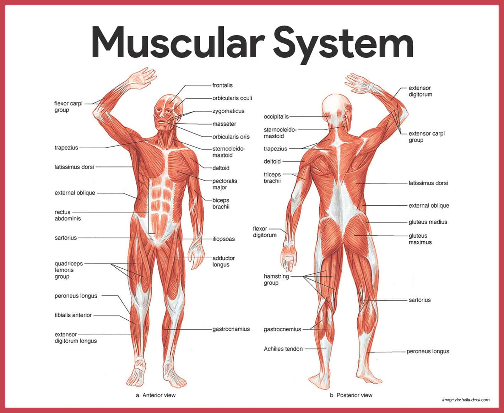
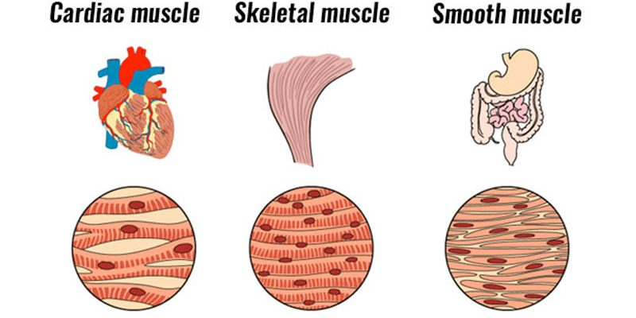
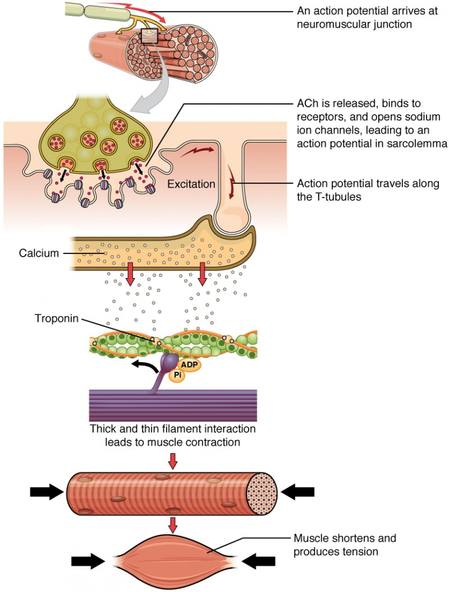
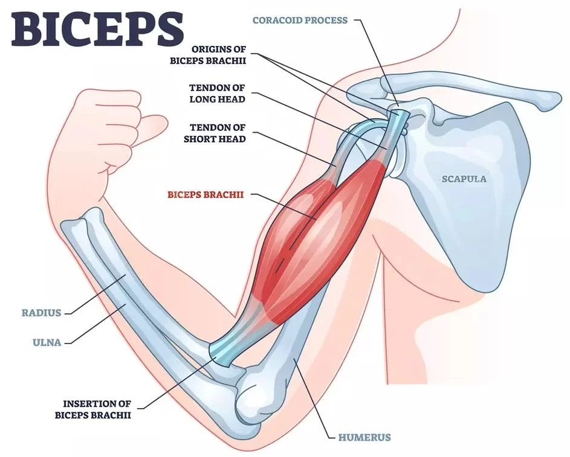

Human Anatomy & Physiology
Understanding the Muscular System
Discover how more than 600 muscles work together to create movement, maintain posture, generate heat, and power athletic performance.
Discover how more than 600 muscles work together to create movement, maintain posture, generate heat, and power athletic performance.
Muscles in the Human Body
Types of Muscle Tissue
Muscles Working Every Day

The muscular system is one of the most important systems in the human body. It contains over 600 muscles that work together to create movement, maintain posture, stabilize joints, and produce heat. Every athletic skill—from sprinting and jumping to swimming and weightlifting—depends on muscles working together efficiently.
Muscles pull on bones to produce movement.
Muscles help keep the body upright against gravity.
Muscles protect and support joints.
Muscle activity helps regulate body temperature.

Skeletal muscles are attached to bones by tendons. They are voluntary muscles, meaning you consciously control them when walking, running, lifting weights, or playing sports.
Smooth muscle is found in organs such as the stomach, intestines, and blood vessels. It works automatically without conscious control.
Cardiac muscle is found only in the heart. It contracts continuously throughout life to pump blood around the body.

Movement begins when the brain sends a signal through the nervous system. The signal reaches muscle fibers, causing them to contract. The muscle shortens and pulls on a tendon, which then pulls on a bone, creating movement.
Brain Sends Signal
Nerve Carries Message
Muscle Contracts
Tendon Pulls Bone
Movement Occurs

The attachment point of a muscle that moves the least during contraction.
The attachment point that moves the most when a muscle contracts.
During a biceps curl, the biceps muscle pulls on the radius, causing the elbow to flex.
Muscles can only pull, not push. Because of this, muscles often work in opposing pairs.
The primary muscle responsible for a movement.
The muscle that opposes or relaxes during the movement.
During a curl, the biceps acts as the agonist while the triceps acts as the antagonist.
Also known as slow-twitch fibers. They are resistant to fatigue and are important for endurance activities such as marathon running and cycling.
Also known as fast-twitch fibers. They generate powerful contractions and are important for sprinting, jumping, and weightlifting.
| Activity | Main Muscles Used |
|---|---|
| Sprinting | Quadriceps, Hamstrings, Gluteus Maximus |
| Jumping | Quadriceps, Gastrocnemius, Gluteus Maximus |
| Throwing | Deltoids, Pectoralis Major, Triceps |
| Swimming | Latissimus Dorsi, Deltoids, Core Muscles |
| Weightlifting | Entire Muscular System |
Muscles do much more than create strength. They also allow movement, maintain posture, stabilize joints, produce heat, and make every athletic performance possible. Understanding how muscles work helps athletes train smarter and perform better.